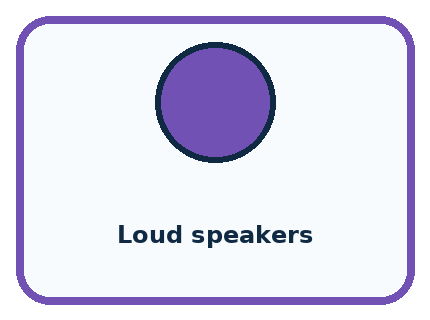
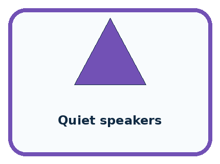
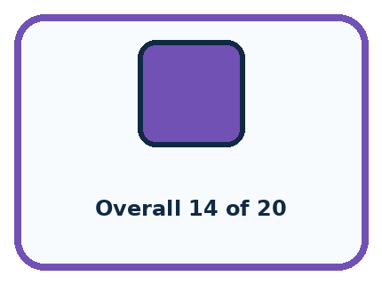
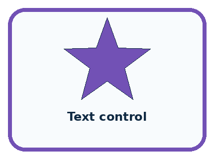

AI Academy · Level 1 · Grade 6 · Week 23 · Student lesson
Fair for Whom?
Learn to understand, design, build, test and explain AI systems responsibly.
Project: Helpful Classroom Sorter
THE CONNECTED WEEK
Count every assessed case. Inspect every relevant condition.
Compare shared tests, trace weighted totals and audit missing outcomes before deciding what a performance claim supports.
Keep one habit: Read the denominator → compare conditions → state the trade-off and evidence limit.
Main lesson · Section 1
Who does the headline score leave out?
Read the denominator before comparing the result.
Start with a performance claim
A system can lead overall and still perform worse in one condition. This week, count correct and assessed cases, inspect each condition, and explain what these small tests leave unknown.
Recall selected and assessed cases
Eight cases were selected, but one has no assessed outcome. How many have assessed outcomes, and what must a performance report say about the remaining case?
Close your notes first. A rough first answer helps us choose the right starting point; it is not a score for your ability.
After trying, check the relevant lesson or ask your teacher. Change the part of your explanation that the evidence shows was wrong.
Your learning goals
I can compute a correct-out-of-assessed fraction and explain its denominator.
I can compare systems on shared cases while checking performance within conditions.
I can combine counts correctly and keep missing outcomes separate from assessed errors.
Earlier wording, alternatives and picture transcripts
Your learning target
Remember before reading
Without opening the old lesson, explain one key idea from Missing and Unbalanced Examples. Give an example and a mistake that the idea helps you avoid.
Without opening the old lesson, explain one key idea from Recommendations. Give an example and a mistake that the idea helps you avoid.
Without opening the old lesson, explain one key idea from Prediction Is Not Fact. Give an example and a mistake that the idea helps you avoid.
Fairness requires checking outcomes for different users and situations.

LEARNING TARGET System A succeeds on 6 of 8 quiet tests and 3 of 4 noisy tests. Is its noisy success rate lower? Show fractions and percentages. What can these small tests not establish?
Learner name:
Readiness for the connected explanation
This week’s end goal
By the end, I can compare group fractions and combine unequal-sized groups correctly.
Main lesson · Section 2
Meet the shared 12-card test
Keep versions, reference labels and assessed cases fixed for a meaningful comparison.
Define the performance fraction
For this week, accuracy means the number of correctly labelled cases divided by the number of assessed cases.
Every assessed case has a system label and a checked reference label, so its result can be judged correct or incorrect. State the system version, cases and scoring rule with the fraction.
Cases without an assessable outcome are reported separately.
Read the complete A/B test
Two fixed shape-recognition versions, A and B, label the same 12 previously unseen picture cards. Eight cards are bright and four are dim; each has a checked circle or square reference label.
Both versions return labels for all 12. A is correct on 8 bright and 1 dim card. B is correct on 6 bright and 2 dim cards.
Calculate A and B from the counts
A therefore has 9 correct out of 12 assessed, written 9/12. Dividing numerator and denominator by 3 gives 3/4. Three quarters equals 75 out of 100, or 75%. B has 8/12, equal to 2/3.
For this comparison keep B as an exact fraction; a rounded percentage is unnecessary.
Earlier wording, alternatives and picture transcripts
PICTURE STORY
Look Closely Before You Explain
Pictures give clues; evidence tells us what the clues mean.

MYSTERY A voice game may work well overall yet miss more commands from quiet speakers than loud speakers.
What do you notice?
Name three visible details without explaining them yet.
Circle the detail most connected to the system's decision.
Name one detail that may be decoration or distraction.
Make a first prediction and state the clue that supports it.
My observations, prediction, and evidence:
GOOD THINKING A prediction can change when stronger evidence appears.
A closer explanation
Main lesson · Section 3
Compare proportions without inventing evidence
Equivalent fractions change the notation, not the number of tested cards.
Inspect the condition-by-condition counts
Combine correct and assessed counts
Compare totals on the shared denominator
With the same denominator 12, compare the numerators: 9 is greater than 8. A is correct on one more of these cards.
This establishes the ordering on this test under this scoring rule; it does not prove that A will always outperform B on future cards.
Explain equivalent fractions
To compare fractions with different denominators, rewrite them as equivalent fractions with a common denominator. For example, 3/4 equals 9/12 and 2/3 equals 8/12.
Changing the written denominator does not create new test cases: it only helps compare the proportions.
Point to the input, the deciding step and the result in this week’s visual. Explain the same step in ordinary words. A picture helps when you can say what each part represents.
Earlier wording, alternatives and picture transcripts
VISUAL MECHANISM
Input → Process → Output
Follow the information instead of imagining magic inside the machine.


INPUT test cases grouped by relevant user or condition
PROCESS compare outcomes and error types by group
OUTPUT identify gaps and choose a repair or boundary
CORE IDEA Fairness requires checking outcomes for different users and situations.
UNDER THE HOOD Fairness is context-specific and cannot be established by overall accuracy alone. Compare performance, error costs, access, and remedy across relevant groups while avoiding stereotypes and protecting privacy.
Draw a fresh example with all three stages:
A closer explanation
Connect the picture and the explanation
Main lesson · Section 4
Compare group performance and possible remedies
Inspect the outcomes within conditions before choosing a response.
Pictures paired with their evidence


The case to investigate
CASE 1 — Loud speakers Clue: 9 of 10 commands work. Meaning: high success.


The case to investigate
CASE 2 — Quiet speakers Clue: 5 of 10 commands work. Meaning: performance gap.


The case to investigate
CASE 3 — Overall 14 of 20 Clue: 70 percent total. Meaning: hides difference.


The case to investigate
CASE 4 — Text control Clue: alternate access path. Meaning: possible remedy.
Discuss the confusing pair
Which two pictures are easiest to confuse? What evidence separates them?
Keep the limit in view
BOUNDARY Fairness work should reduce burdens without turning group labels into stereotypes.
Earlier wording, alternatives and picture transcripts
PICTURE GALLERY
Four Cases, Four Clues
Use the visual cue, then read the evidence carefully.
CASE 1 — Loud speakers Clue: 9 of 10 commands work. Meaning: high success.
CASE 2 — Quiet speakers Clue: 5 of 10 commands work. Meaning: performance gap.
CASE 3 — Overall 14 of 20 Clue: 70 percent total. Meaning: hides difference.
CASE 4 — Text control Clue: alternate access path. Meaning: possible remedy.
Change one thing in the pictured case
Change: Give bright and dim groups equal weight as an explicitly different metric.
Prediction: M scores 70%; N scores about 81.7%.
Reason: This averages group rates and is not the original 16-card agreement rate.
Main lesson · Section 6
Trace the separate 16-card badge test
Distinguish per-card accuracy from an explicitly chosen equal-group metric.
The badge-reader facts
A fictional badge reader is evaluated on bright and dim cards with known reference labels.
Version M is correct on 9 of 10 bright cards and 3 of 6 dim cards.
Version N uses the same cards: 8 of 10 bright and 5 of 6 dim correct.
Follow the group and total calculations


Read the picture one step at a time
Explain the weighting and trade-off
Adding correct counts and denominators weights each tested card once. Averaging 90% and 50% would incorrectly give unequal groups equal size in the all-card rate. The group breakdown reveals a trade-off hidden by the total.
Decide what matters with the relevant users rather than announcing that one number proves fairness.
Read the labelled picture: Which group loses performance under N, and can total improvement erase that fact?
Predict a different metric
Before opening the changed-metric picture, predict M and N when bright and dim group rates each receive half the weight. Is this the same question as counting every card once?
Check the changed metric


Keep the evidence limit
Six dim cards supply limited evidence; these descriptive rates do not prove a system is fair for all users.
Earlier wording, alternatives and picture transcripts
WORKED EXAMPLE
Watch the Reasoning, Not Just the Answer
Every step connects a claim to observable evidence.

CASE A voice game may work well overall yet miss more commands from quiet speakers than loud speakers.
STEP 1 — OBSERVE test cases grouped by relevant user or condition
STEP 2 — TRACE compare outcomes and error types by group
STEP 3 — CONCLUDE identify gaps and choose a repair or boundary
MODEL REASONING Report each group's success count and error pattern, not only the total.
Improve microphone/process testing with consented varied voices and keep a non-voice control so access does not depend on one input mode.
DO NOT OVERCLAIM Fairness work should reduce burdens without turning group labels into stereotypes.
What new evidence could change this answer?
A closer explanation
| Question | Version A | Version B |
|---|---|---|
| Bright-card accuracy | 8/8 = 1 | 6/8 = 3/4 |
| Dim-card accuracy | 1/4 | 2/4 = 1/2 |
| Combined accuracy | (8 + 1)/(8 + 4) = 9/12 | (6 + 2)/(8 + 4) = 8/12 |
The bright group has twice as many assessed cards as the dim group. Each individual card counts once in the combined result, so add correct counts and assessed counts.
Do not simply average the two group percentages and call it the all-card accuracy: that would give each group equal weight despite their different sizes.
If the intended task especially needs dim-card performance, inspect that result and gather suitable additional evidence before choosing. An overall leader can still be weaker in a relevant condition.
This table alone also does not tell us whether particular mistakes have different consequences. The scoring rule must match the purpose.
Learn from the worked case
Cover the result before checking it. Say what is given, choose the procedure, and follow one step at a time. Then uncover the result and explain your first mismatch. Ask why a step is allowed, not only what number it produces.
A pictorial worked case: Fair for Whom?
The facts we will use


Why this result follows
What this example does not establish
Change one thing: Give bright and dim groups equal weight as an explicitly different metric. Predict the result before checking the explanation. What remains the same?
Main lesson · Section 7
Repair claims that hide the denominator
A correct percentage still needs counts, coverage and a stated purpose.
Report A with its condition breakdown
A useful performance statement gives the correct count, assessed count, missing count and evaluation conditions. For A: 9/12 correct, no missing outcomes, on the shared test of 8 bright and 4 dim cards.
Follow it with the important contrast: 8/8 bright and 1/4 dim. Percentages are optional shorthand, not replacements for these counts.
Separate proportion from quantity of evidence
A score of 3/4 and a score of 75/100 are equal proportions, but they describe different quantities of evidence if they come from different tests. The collection method and case coverage still matter.
Neither fraction is an individual prediction confidence or a guarantee about the next case.
Repair both fairness claims
CLAIM A Good overall accuracy proves fairness.
CLAIM B Fairness means every group must have identical data or outcomes in every situation.
STRONG ANSWER FRAME I claim ______ because the evidence shows ______. The process is ______. One limit is ______.
Earlier wording, alternatives and picture transcripts
COMPARE
Same Result, Different Reason
A comparison helps reveal the true concept boundary.
| Case | Evidence | What it shows |
|---|---|---|
| Loud speakers | 9 of 10 commands work | high success |
| Quiet speakers | 5 of 10 commands work | performance gap |
| Overall 14 of 20 | 70 percent total | hides difference |
| Text control | alternate access path | possible remedy |
Repair two tempting claims
Repair:
Repair:
A closer explanation
Main lesson · Section 8
Practise: compare assessed outcomes honestly
C has two unassessed outcomes; its headline score cannot complete the shared comparison.
Read C’s assessed and missing counts
A third version C is run on the same 12 cards, but two results are lost before they can be judged. Among its 10 assessed outcomes, 9 are correct and 1 is wrong: 9/10 = 90% assessed accuracy, with 2 outcomes unassessed.
Do not call this 90% on all 12. Its assessed subset differs from A and B, so the headline fractions do not give the same complete-case comparison.
Choose a defensible next comparison
Recover and assess the two lost results if possible, without changing the versions.
Another clearly labelled comparison can use the exact same cases with known outcomes for every version; disclose which cases it excludes and why. The current totals do not tell us how A performed on C’s ten assessed cases.
Never invent that subset score.
Compare totals and conditions in W2
Use workbook W2 for the connected example “Fractions and performance comparisons”. First fill the input and rule boxes. Try the middle steps before asking for a hint. After a hint, try the next step yourself.
| Plan | Do | Check |
|---|---|---|
| What is given? Which rule or procedure applies? | Record each intermediate step. | Does the result follow? What remains unknown? |
Explain your trace to a partner. Your partner points to one step to check. Swap roles on the next case. Each person writes their own explanation.
Repair the denominator mistake
Use the worked case for Fractions and performance comparisons. Proposed explanation: “Only correct cases belong in the denominator”. Decide whether this explanation is supported.
Point to the step or supplied fact that decides; explain your repair if needed.
Answer on your own before discussion. If you are unsure, say which step you need help with.
Return to the badge trade-off
Which group loses performance under N, and can total improvement erase that fact?
This is supported practice. Keep the separately named independent case for an attempt before feedback.
Earlier wording, alternatives and picture transcripts
GUIDED PRACTICE
Try It, Check It, Explain It
Use support now so you can succeed independently later.

Explain how the picture story demonstrates this idea: Fairness requires checking outcomes for different users and situations.
Use a fresh example to explain fairness.
Trace a new input → process → output example.
Find and repair the error in: Fairness means every group must have identical data or outcomes in every situation.
Invent one edge case and name the safe response.
PARTNER CHECK Point to the evidence. Do not accept an answer that only repeats the vocabulary word.
A closer explanation
Practise with less help: Compare totals and conditions
Check your reasoning
Explain the picture
Main lesson · Section 9
Investigate equal totals with unequal conditions
Use the supplied paper case, then distinguish the audit from any actual classroom trial.
The shared recordings and supplied outcomes
Paper investigation: two fixed fictional voice-game versions label the same 12 command recordings with checked reference labels. There are 8 loud and 4 quiet recordings; all outcomes are assessable. Version R is correct on 7 loud and 1 quiet recording. Version S is correct on 5 loud and 3 quiet recordings. Predict the overall and within-condition leaders before calculating.
Predict, calculate and inspect the trade-off
Make a table of correct, incorrect and assessed counts for each condition and version. Calculate each overall fraction by adding counts. Explain whether equal totals mean equal service in each condition. Propose one additional test and one alternate control for users whose commands fail. These supplied outcomes are fictional evidence for a paper audit; record “not run” for an actual voice-game test you have not performed.
Keep a normal case and an edge case clearly separated.
Record what happened—even when it does not match your prediction.
Explain the result, one limitation, and the next useful test.
Record evidence and a practical remedy
| Case | Prediction | Observed result | What it means |
|---|---|---|---|
| Normal | |||
| Edge |
Before trying: what do I expect, and why? While trying: which step could first go wrong? Afterwards: what did I actually observe, and what should change? Keep “not run” if you only traced the procedure.
Earlier wording, alternatives and picture transcripts
EXPLORER LAB
Voice Game Fairness Check
Predict first, test honestly, and explain what the evidence means.

State your prediction before the result is known.
Complete the task: Run a voice-game test for quiet and loud speakers.
INDEPENDENCE After support is removed, repeat the proof with a fresh case.
Plan → try → check
Main lesson · Section 14
Try alone: compare the new shared sound test
Use the new X/Y outcomes before opening feedback.
The independent task and complete givens
Versions X and Y label the same 20 previously unseen clips: 12 quiet and 8 noisy, with no missing outcomes. X is correct on 10 quiet and 2 noisy clips; Y on 9 quiet and 5 noisy clips.
Calculate each combined fraction and percentage, identify the overall leader and compare the leaders within each group. Explain why an overall result cannot guarantee the next clip’s outcome.
Keep your first attempt
Attempt this case before feedback. Record any help. Earlier examples below are further practice; a case already practised with feedback cannot establish fresh transfer.
Your teacher has the independent answer and scoring criteria. Complete the matching workbook week to keep your practice evidence together.
Use feedback after your attempt
Attempt the independent case before hints. Record whether you worked alone, used a hint or followed a model. After feedback, fix the first unsupported step and explain why it changed.
A later check uses a changed case, not a copied answer.
Earlier wording, alternatives and picture transcripts
Independent case: Compare a new shared sound test
Week 23 Independent application
Close the worked explanation. Apply the idea to this different question without copying.
A helper succeeds on 4 of 4 clear voices and 1 of 4 quiet voices. Who is less well served? What evidence should a repair preserve?
My answer, with a trace, calculation or supporting evidence
Create and test
Change one relevant detail. Predict the result before testing. Include a boundary or missing-information case when it helps reveal a limit.
My changed input and expected result
Connect to your project
Test the sorter across relevant item conditions and users; never infer sensitive identity to create a fairness check.
The evidence I will keep
Transfer practice from the original programme
System A succeeds on 6 of 8 quiet tests and 3 of 4 noisy tests. Is its noisy success rate lower? Show fractions and percentages. What can these small tests not establish?
Use feedback to improve
Main lesson · Section 11
Choose sorter checks that reflect its purpose
Report relevant conditions and the consequences of errors alongside totals.
This week’s project decision
THIS WEEK'S CHECKPOINT Test the sorter across relevant item conditions and users; never infer sensitive identity to create a fairness check.
Report sorter outcomes by relevant conditions and record whose failures matter when choosing a revision.
Plan evidence, access and uncertainty
What real classroom need does this serve?
What information is necessary—and what should stay private?
What happens inside the process?
What normal and edge cases will you test?
When should it say not sure or ask a person?
Avoid stereotypes in the remedy
RESPONSIBLE DESIGN Fairness work should reduce burdens without turning group labels into stereotypes.
Earlier wording, alternatives and picture transcripts
PROJECT
Helpful Classroom Sorter
Build one coherent system across the year, one evidence-based decision at a time.


My project decision:
Evidence for your project
Main lesson · Section 16
Finish: explain the fraction and its limits
Close your notes and describe both the total and the conditions.
Your exit explanation
Close your notes. Explain this goal in your own words: Compute a correct-out-of-assessed fraction and explain its denominator
Choose your next check
If you are unsure, return to the worked picture and explain one arrow. If you are ready, change an input or assumption and justify your prediction.
Save your workbook evidence. At the next review, try a different case before opening your old answer.
Reference bank and extra practice
Choose the reference that helps your next step.
Your quick word guide
Reference · Section 5
Your quick word guide
Use the words to explain a particular step, record or limit.
Core vocabulary
| Word | Meaning | My example |
|---|---|---|
| fairness | reasoned treatment of outcomes across people and situations | |
| subgroup result | performance measured for one relevant group | |
| gap | difference between group outcomes | |
| error cost | harm or burden caused by a mistake |
Terms for the connected explanation
| Word | Meaning |
|---|---|
| Numerator | The count above the fraction line; here, assessed correct cases |
| Denominator | The count below the fraction line; here, all assessed cases |
| Equivalent fractions | Different written fractions that represent the same proportion |
| Accuracy | The fraction of assessed classification cases labelled correctly under a stated rule |
| Aggregate | A result formed by combining the counts of several groups |
Repair a claim using a word
CLAIM TO REPAIR Good overall accuracy proves fairness.
Use one vocabulary word and one piece of evidence to repair it:
Earlier wording, alternatives and picture transcripts
VOCABULARY
Words You Can See and Use
The badge is a memory cue; the definition does the real thinking work.


Misconception detective
WORD POWER A strong definition helps you decide something in a new case.
Words used in the closer explanation
Choose a stronger thinking challenge
Reference · Section 10
Choose a stronger thinking challenge
Choose the next useful challenge rather than treating the whole ladder as compulsory.
Pick your next step
RECALL Define fairness.
EXPLAIN Fairness requires checking outcomes for different users and situations.
TRACE Show the input, process, and output.
DIAGNOSE Repair: Good overall accuracy proves fairness.
TRANSFER Apply the idea to a new home or classroom case.
CREATE Design one revealing test.
DEFEND Give a claim, evidence, mechanism, limit, and safe action.
Earlier wording, alternatives and picture transcripts
PRACTICE LADDER
Climb from Recall to Defense
Each step asks for a stronger kind of understanding.

RETRY RULE A coached answer becomes mastery only after you solve a different case independently.
Reference: check your explanation
Reference · Section 12
Reference: check your explanation
Use after practice. Compare a new shared sound test is the selected independent case.
Check the evidence and its limit
□ Name or draw the fresh case.
□ Trace input, process, and output.
□ State the conclusion and strongest evidence.
□ Name one limit, failure, missing clue, or fairness/privacy concern.
□ Explain one safe next action or improvement.
Record support
My level: □ Not yet □ With one hint □ Independently □ I can teach it
Earlier wording, alternatives and picture transcripts
MASTERY
Checklist for explaining this week’s idea
Use after practice. Compare a new shared sound test is the selected independent case.

EXPLANATION CHECK Compute correct out of assessed, combine counts, compare conditions and state what the test cannot establish.
Independent evidence:
SELF-CHECK Report each group's success count and error pattern, not only the total. Improve microphone/process testing with consented varied voices and keep a non-voice control so access does not depend on one input mode.
NEXT BRIDGE Carry today's evidence habit into: Privacy by Choosing Less.
Extra practice: Compare success under two conditions
Reference · Section 13
Extra practice: Compare success under two conditions
Try the question before opening its worked explanation.
Read the supplied case and question
A voice system succeeds on 8/10 quiet and 4/10 noisy recordings.
Compare and propose the next investigation.
Your explanation
Which detail supports the answer, and why does it matter?
Check after trying
The rates differ. Test more varied recordings under controlled conditions and inspect other factors before claiming a cause.
| Evidence or stage | Value or result |
|---|---|
| Quiet | 8/10 |
| Noisy | 4/10 |
Earlier wording, alternatives and picture transcripts
Week 23 Worked case
Use the supplied details to practise the weekly concept before attempting the independent question. This case extends the illustrated lesson.
The situation
The question
Worked explanation
Explain it in your own words
Trace the supplied case visually
Compare success under two conditions
A voice system succeeds on 8/10 quiet and 4/10 noisy recordings.
Compare and propose the next investigation.
The rates differ. Test more varied recordings under controlled conditions and inspect other factors before claiming a cause.
Reference: original lesson checklist
Reference · Section 15
Reference: original lesson checklist
Use an additional checklist when it helps inspect your explanation.
Targets and evidence
| By the end, I can | How I will show it |
|---|---|
| Compute a correct-out-of-assessed fraction and explain its denominator | Explain the deciding step, show a trace or test, and state one limit. |
| Compare systems on shared cases while checking performance within conditions | Explain the deciding step, show a trace or test, and state one limit. |
| Combine counts correctly and keep missing outcomes separate from assessed errors | Explain the deciding step, show a trace or test, and state one limit. |
Keep your route and first prediction
Remember → watch and explain → try with help → investigate → try independently → keep project evidence. Your teacher may spread this lesson across several classes.
Keep your first prediction. Compare it with what the evidence shows and explain any change.
Earlier wording, alternatives and picture transcripts
Start with this question: A fictional badge reader is evaluated on bright and dim cards with known reference labels.
Extra practice: pictures, repair and feedback
Reference · Section 17
Extra practice: pictures, repair and feedback
Attempt each question before opening its explanation. Use one browser or paper copy.
First supported question
A fictional badge reader is evaluated on bright and dim cards with known reference labels.
Which labelled step matches this detail? N improves total and dim results but loses one bright success.
1. Dim group
2. Combined counts
3. Bright group
4. Discuss trade-off
Hint if needed: Read the steps in the pictorial case. Match the supplied detail to the stage that performs or records it.
Practice 1: explain the deciding evidence
Check the first explanation
After your attempt, compare with the supported explanation: Discuss trade-off N improves total and dim results but loses one bright success. Adding correct counts and denominators weights each tested card once.
Averaging 90% and 50% would incorrectly give unequal groups equal size in the all-card rate. The group breakdown reveals a trade-off hidden by the total.
Decide what matters with the relevant users rather than announcing that one number proves fairness.
Changed-case question
Changed-case practice: Give bright and dim groups equal weight as an explicitly different metric. Which conclusion is supported by the supplied facts?
1. We can decide the result without examining the changed input or the procedure.
2. This one example guarantees correct results for every future input.
3. M scores 70%; N scores about 81.7%.
Hint if needed: Use the changed condition and the deciding step in the pictorial trace. The answer must say what follows from those facts.
Practice 2: explain the deciding evidence
Check the changed case
After your attempt, compare with the supported explanation: M scores 70%; N scores about 81.7%. This averages group rates and is not the original 16-card agreement rate.
Repair and save your work
Review Missing and Unbalanced Examples (ai-1/22). Goal: Name the target collection, selection list and cases actually assessed. Short practice: Would testing only dim plain cards close every current gap?
Point to the target groups.. Return to this week and explain what you changed.
Review Recommendations (ai-1/20). Goal: Apply eligibility requirements before ranking candidates by preferences. Short practice: Why does the recommendation change without changing anyone’s preferences?.
Return to this week and explain what you changed.
Review Prediction Is Not Fact (ai-1/17). Goal: Separate a recorded prediction from the observation used to check it. Short practice: Which field changes the observation label, and which field changes the model prediction?.
Return to this week and explain what you changed.
Use Download completed work in the hosted lesson to export your answers, reflections, practice feedback and code-run evidence. Open the HTML copy to read or print it.
Drafts stay in this browser when storage is available; clear drafts on a shared device.
Earlier wording, alternatives and picture transcripts
Use this supported practice once, in the browser or on paper. Keep the reserved independent assessment for a separate first attempt before teacher feedback.
Repair a missing building block
Keep your completed work
Reference: the six-picture journey
Reference · Section 18
Reference: the six-picture journey
Revisit the picture that serves the current question; key diagrams already sit beside the main explanation.
01. Fair for Whom?: the case


A fictional badge reader is evaluated on bright and dim cards with known reference labels. Supplied facts: Version M is correct on 9 of 10 bright cards and 3 of 6 dim cards.
Version N uses the same cards: 8 of 10 bright and 5 of 6 dim correct.
Point to the given fact that matters most. Explain why it matters.
02. Follow the deciding steps
Bright group: M:9/10=90%; N:8/10=80%. → Dim group: M:3/6=50%; N:5/6≈83.3%. → Combined counts: M:(9+3)/16=75%; N:(8+5)/16=81.25%. → Discuss trade-off: N improves total and dim results but loses one bright success.
Point to each numbered stage and explain which recorded input it uses.
03. Group rates compared on the same cards
Group rates compared on the same cards. Units: percent correct. M bright: 90. M dim: 50. N bright: 80. N dim: 83.33333333333333.
Read the labels and values. Explain the relationship the model shows.
04. Change one thing. Trace what follows.
Original case: N improves total and dim results but loses one bright success. Changed condition: Give bright and dim groups equal weight as an explicitly different metric. Expected result: M scores 70%; N scores about 81.7%.
Reason: This averages group rates and is not the original 16-card agreement rate.
Predict before checking the worked changed-case result. Name what changed and what the supplied facts allow you to conclude.
05. Connect the explanation to its limit


Adding correct counts and denominators weights each tested card once. Averaging 90% and 50% would incorrectly give unequal groups equal size in the all-card rate. The group breakdown reveals a trade-off hidden by the total.
Decide what matters with the relevant users rather than announcing that one number proves fairness. Limit: Six dim cards supply limited evidence; these descriptive rates do not prove a system is fair for all users.
Explain the case, then point to a limit on the claim.
06. Make the idea visible in your project


Report sorter outcomes by relevant conditions and record whose failures matter when choosing a revision. Draw your input, deciding step, result and limit.
Supported question: Which group loses performance under N, and can total improvement erase that fact?
Draw your project trace and justify the deciding step using evidence.